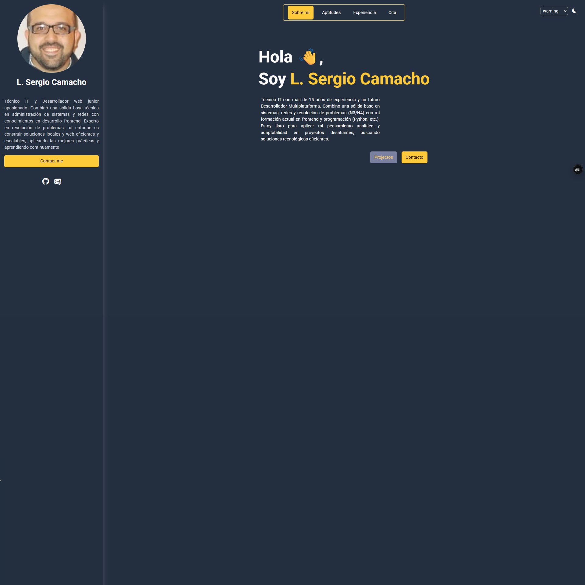
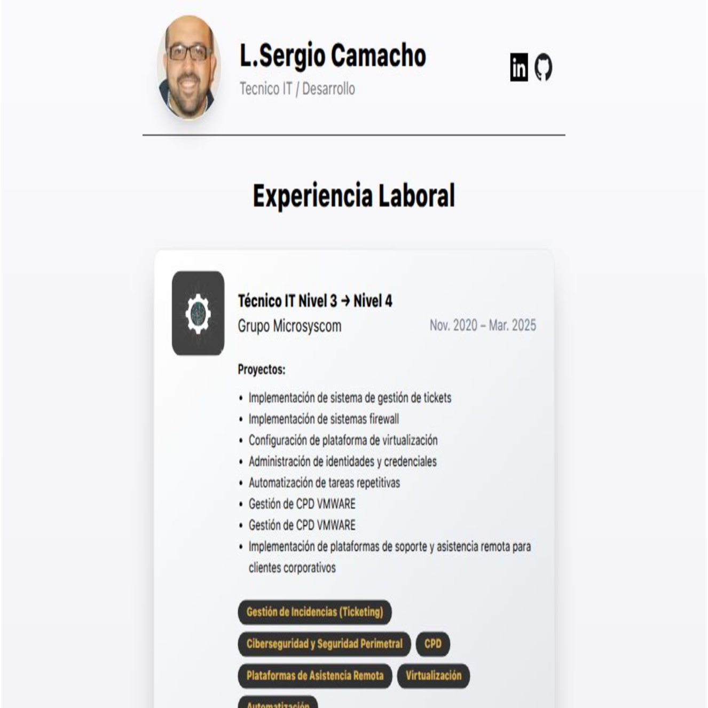
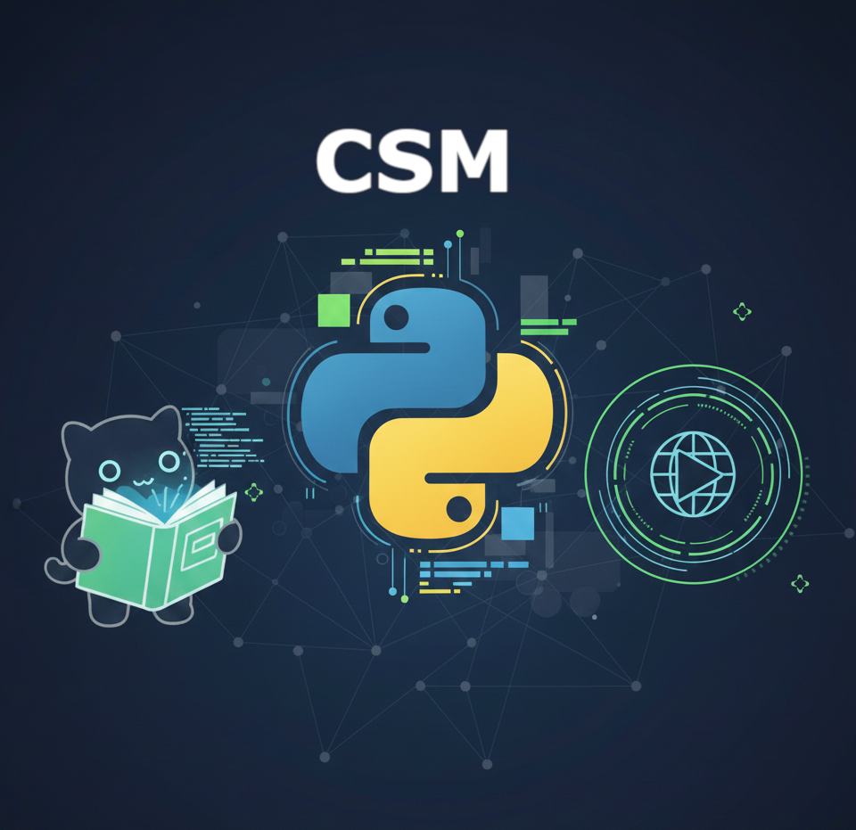
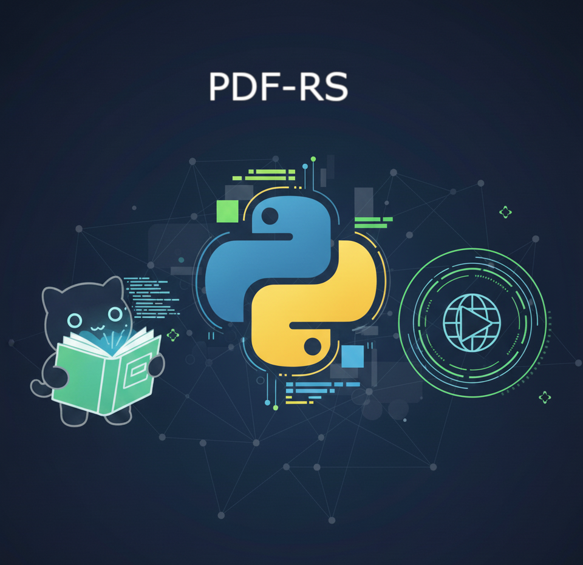

Portfolios y Proyectos Destacados





Portfolio Moderno
Plataforma desarrollada con las últimas tendencias, enfocada en optimización y rendimiento.
Portfolio Clásico
Mi primera presentación personal, utilizando una pila de desarrollo web tradicional (HTML/CSS).
CSM
Utilidad Python con interfaz gráfica (GUI) para optimizar y auditar instalaciones semi-automáticas.
Renamer PDF Security
Renombrar y proteger PDFs con la opcion de dar seguridad a los archivos
Renamer PDF Security Suite
La herramienta definitiva para la gestión de documentos PDF por lotes. Genera plantillas de datos (Excel), renombra automáticamente archivos y protege PDFs con contraseñas individuales.
[Proyecto Y] Futuro Proyecto
Futuro Proyecto